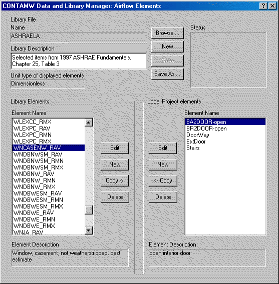

CONTAM 使您能够在项目内包含的构建组件之间以及项目之间共享某些类型的数据。项目内（本地）数据的共享是通过允许您将多个建筑组件与 数据元素 在项目中定义。通过将数据元素从一个项目导出到 CONTAM 库文件，然后将数据元素从库文件检索到另一个项目，可以在项目之间共享数据。下表列出了 CONTAM 实现的不同类型的数据元素。所有数据元素都可以在项目内共享，并且除占用时间表之外的所有数据元素都可以在项目之间共享。
| 图书馆/本地数据元素 |
| 污染物相关 (LB0) |
| 物种 |
| 源/汇元件 |
| 污染物过滤器 |
| 动力学反应 |
| 时间表 (LB1) |
| 风压剖面 (LB2) |
| 气流元件 (LB3) |
| 管道流量元件 (LB4) |
| 控制超元件 (LB5) |
| 仅限本地的数据元素 |
| 入住时间表 |
数据元素
您可以根据本手册“使用CONTAM”部分中针对特定数据元素给出的过程来创建和修改数据元素。创建数据元素后，您可以在创建相关建筑组件时将其与相关建筑组件关联起来。您可以通过在编辑特定建筑组件的属性时从 ContamW 向您显示的本地列表中选择所需的元素来完成此操作。要在项目文件之间共享数据元素，您必须使用 CONTAMW 库管理器。您还必须使用 CONTAMW 库管理器从本地项目或库中删除数据元素。要删除本地数据元素，它们不得被任何建筑组件引用。
库文件
CONTAM 库是包含可共享数据元素的描述的文件。每种类型的可共享数据元素都存储在不同的库文件中。您可以根据需要创建任意数量的每种类型的库文件，并将它们存储在计算机文件结构中的任何位置。每种类型的库文件都与不同的三字符扩展名相关联，如上表所示。
CONTAMW 库管理器（如下图所示）是一个对话框，当您从库访问数据元素时会显示该对话框。 Data 菜单或在编辑利用库数据元素的建筑组件之一的属性时单击“库...”按钮。该对话框分为三个部分：库文件、库元素和本地项目元素部分。库文件部分显示当前显示的库文件的名称，并允许您保存、重命名和打开新的和现有的库文件。库元素部分显示库文件部分中当前列出的库文件中包含的数据元素。本地项目元素部分显示当前项目文件中包含的数据元素。
